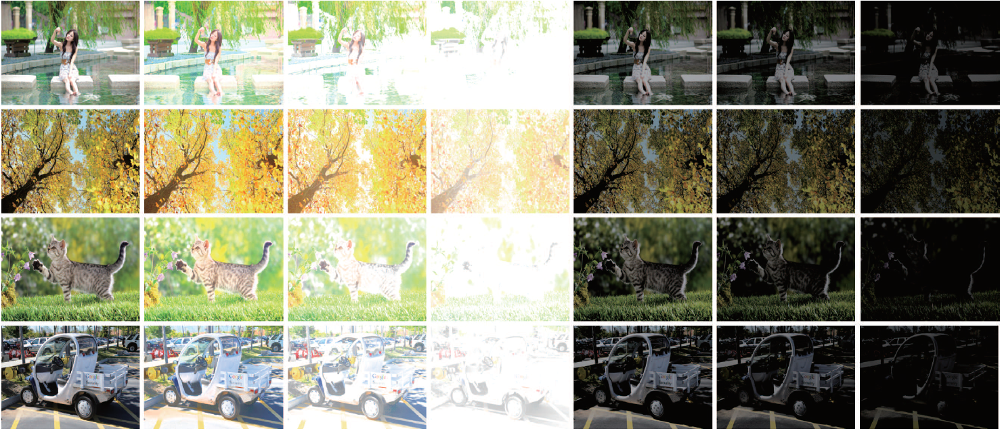

|
Towards Automatic Image Exposure Level Assessment Lin Zhang, Lijun Zhang, Xiao Liu, Ying Shen, and Shengjie Zhao School of Software Engineering, Tongji University, Shanghai 201804, China |
Introduction
This is the website of our paper "Towards Automatic Image Exposure Level Assessment", submitted to IEEE Transactions on Image Processing for review.
The quality of acquired images can be surely reduced by improper exposures. Thus, in many vision-related industries, such as imaging sensor manufacturing and video surveillance, a method that can objectively and automatically assess exposure levels of images is highly desired. Taking an image as input, such a method is expected to output a scalar value, which can represent the overall perceptual exposure level of the examined image, ranging from extremely underexposed to extremely overexposed. However, studies focusing on image exposure level assessment (IELA) are quite sporadic. It should be noted that blind NR-IQA (No-Reference Image Quality Assessment) algorithms or metrics used to measure the quality of contrast-distorted images cannot be used for IELA. The root reason is that though these algorithms can quantify quality distortion of images, they do not know whether the distortion is due to underexposure or overexposure. In this paper, we attempt to solve the issue of IELA to some extent and our contributions are twofold. Firstly, in order to facilitate the study of IELA, an Image Exposure Database IEpsD) is established. In this database, there are 24,500 images with various exposure levels, and for each image there is an associated subjective exposure score which could reflect its perceptual exposure level. Secondly, as IELA can be naturally formulated as a regression problem, we thoroughly evaluate the performance of modern deep CNN architectures for solving this specific task. Our evaluation results can serve as a baseline when the other researchers develop even more sophisticated IELA approaches. To make our results fully reproducible, the dataset and the relevant source code have been made publicly available on this website.
IEpsD (Image Exposure Database)
IEpsD has two parts, "real data" and "synthetic data". "real.zip" comprises 3,500 real-world images while "synthetic.zip" includes 21,000 synthetic images generated using our exposure simulation algorithm. Each image in IEpsD has an associated subjective score, reflecting its perceptual exposure level. In our experiments, IEpsD¡¯s synthetic images are used for training IELA models, while its real-world images are used for testing.
Source Codes
The code can synthesize images with various exposure levels from properly exposed source images.

Sample synthetic images. Images in the first column are the source images. Images in columns 2~4 are synthetic overexposed images while images in columns 5~7 are synthetic underexposed ones.
2. IEMx.zip
This is the code of IEMx including training on real images and testing on synthetic images. Testing results of different neural network structures are in corresponding .txt files. The prerequisites for running the .ipynb file is the Tensorflow+Keras environment and Jupyter Notebook.
Created on: Apr. 16, 2019
Last update: Apr. 16, 2019